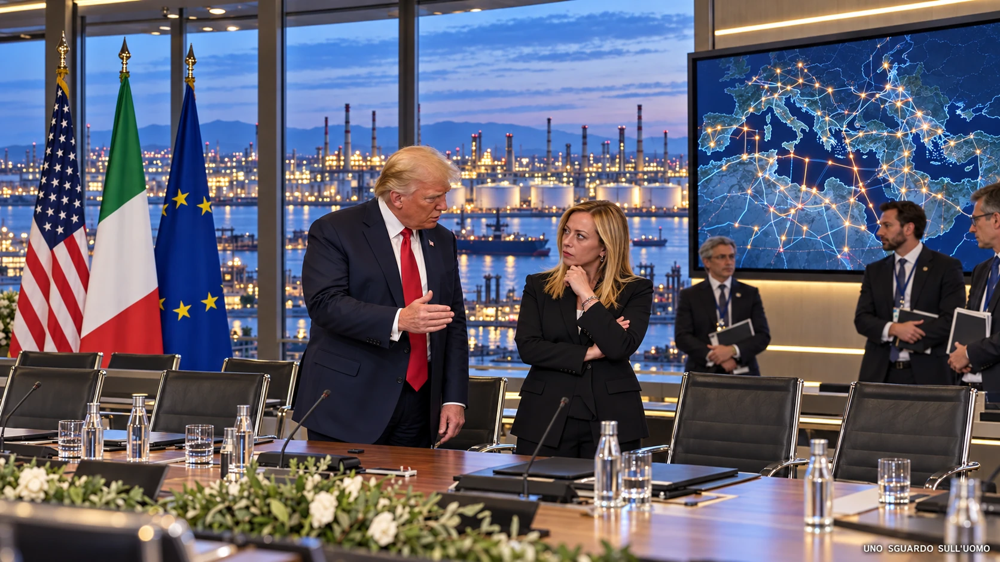

In questo dossier
- La notizia
- Quando Trump pensava di poter trattare Meloni come un alleato minore
- Il segnale di New York: Meloni non offre una ricucitura gratuita
- Poi il tavolo si gira: l’America ha un problema di gasolio
- Il 2 ottobre: il G7 mette il diesel sul mercato
- Perché l’Italia conta più di quanto Trump aveva valutato
- Il vero moltiplicatore si chiama Eni
- Quando Giorgia entra nella stanza, Eni entra con lei
- Il potere c’era già. Con Meloni cambia la regia
- La prova domestica: quando Eni si muove, il mercato ascolta
- Trump ha bisogno dell’Europa. L’Europa ha bisogno anche dell’Italia
- E allora perché Trump torna a parlare bene di Giorgia?
- Il punto politico
- Conclusione
- Fonti
La notizia
Donald Trump aveva sottovalutato l’importanza della presidente del Consiglio italiana Giorgia Meloni. Più di una volta la sua arroganza lo aveva portato a trasformare una divergenza politica in una provocazione personale. Oggi, però, il quadro è cambiato: sono gli Stati Uniti ad avere bisogno della collaborazione europea e, quando Washington ha bisogno dell’Europa, deve fare i conti anche con il peso dell’Italia.
Il 2 ottobre 2026, davanti ai giornalisti alla Casa Bianca, Trump definisce il rapporto con Meloni «molto buono» e aggiunge: «Mi piace. Mi è sempre piaciuta». A porgli la domanda è il giornalista italiano Iacopo Luzi de La Stampa.
La domanda vera è un’altra: perché il presidente americano, dopo mesi di attacchi e umiliazioni pubbliche, sceglie proprio adesso di ricucire?
Trump aveva scucito il rapporto quando pensava di poter imporre le condizioni. Oggi deve ricucirlo nel momento in cui è l’America ad avere bisogno dell’Europa.
Quando Trump pensava di poter trattare Meloni come un alleato minore
La rottura non nasce da una battuta isolata. È una sequenza. E quella sequenza serve a capire quanto sia significativo il cambio di tono di ottobre.
Il 19 giugno, dopo il Gruppo dei Sette (G7), Trump racconta alla televisione italiana che Meloni lo avrebbe «implorato» per una fotografia e che lui avrebbe accettato perché gli faceva pena. Meloni reagisce definendo la storia completamente inventata e rivendica che né lei né l’Italia implorano nessuno. La tensione diventa anche diplomatica: Antonio Tajani cancella una visita negli Stati Uniti e salta una conferenza economica Italia-Stati Uniti d’America (USA).
Poche settimane dopo Trump alza ancora il livello. Pubblica sui propri social un contenuto con Meloni accompagnato dalla frase «Restraining Order Needed», trasformando la presidente del Consiglio di un Paese alleato in materiale da scherno personale.
Poi arriva il nodo politico vero. Durante la guerra con l’Iran, Roma nega agli Stati Uniti l’utilizzo di Sigonella nelle modalità richieste da Washington. Trump continua a dire che Meloni gli piace e che è una «good person», ma aggiunge che «she wasn’t there for us». L’8 luglio arriva la frase ancora più pesante: secondo Trump l’Italia si sarebbe comportata «very bad» sulla questione delle basi.
Qui il tono da bullo non è un’etichetta messa al posto dei fatti: viene dopo i fatti. Prima la derisione personale, poi la pressione politica, poi il rimprovero pubblico quando l’Italia non esegue ciò che Washington chiede. Trump si comporta come se il peso dell’interlocutore fosse misurato dalla sua disponibilità ad allinearsi.
Ma l’Italia non era uscita dal conflitto e non aveva abbandonato il Golfo. Dalla seconda metà di marzo 2026 la Difesa italiana mantiene un dispositivo a supporto della difesa aerea di Arabia Saudita, Kuwait e Bahrein. Circa 400 militari dell’Aeronautica, quattro Eurofighter, capacità di sorveglianza e allarme precoce, radar e sistemi anti-drone; a questi si aggiunge una componente terrestre con capacità di difesa antiaerea e antimissile. Il dissenso con Washington riguardava quindi il modo di partecipare, non il disimpegno italiano dalla sicurezza regionale.
Il segnale di New York: Meloni non offre una ricucitura gratuita
Alla fine di settembre Meloni manda un altro segnale. Non partecipa all’Assemblea generale dell’Organizzazione delle Nazioni Unite (ONU) a New York, dove Trump è presente e incontra diversi leader, e delega la rappresentanza italiana al ministro degli Esteri Antonio Tajani. Negli stessi giorni partecipa alla cena inaugurale della Milano Fashion Week.
La spiegazione ufficiale è che l’Italia è pienamente rappresentata da Tajani e che la presidente del Consiglio deve seguire anche i dossier interni. Meloni rivendica inoltre la scelta di essere a Milano come segnale di vicinanza a una filiera che vale oltre 36 miliardi di euro di esportazioni. Tajani esclude pubblicamente che l’assenza dipenda dalle frizioni con Trump.
Non è la prova di un ultimatum personale e non dimostra che Meloni abbia preteso delle scuse. Ma, dopo la derisione pubblica e lo scontro sulle basi, la scelta assume anche un significato politico: Meloni evita di offrire a Trump una ricucitura gratuita e pubblicamente visibile. Pochi giorni dopo, quando Washington ha bisogno di una risposta europea sul diesel, l’Italia torna al tavolo da una posizione diversa.
Poi il tavolo si gira: l’America ha un problema di gasolio
A fine settembre e inizio ottobre la situazione energetica internazionale mette gli Stati Uniti sotto pressione. Il gasolio americano costa molto, le scorte sono tese e il mercato mondiale dei prodotti raffinati è stretto. Russia e Cina limitano le esportazioni, il Medio Oriente resta instabile e la capacità di raffinazione europea è diminuita negli anni.
Qui è importante evitare un equivoco che sui social ha prodotto molta confusione: il problema non è semplicemente «l’America non manda più gasolio all’Europa». Il flusso fisico del gasolio statunitense può essere diretto verso mercati diversi. Il punto è che gli Stati Uniti sono un grande esportatore mondiale: se Washington trattiene più prodotto per difendere il proprio mercato interno, la pressione si trasferisce sul mercato globale e quindi anche sull’Europa.
Trump arriva a minacciare una restrizione delle esportazioni americane di diesel. Ma quella soluzione avrebbe creato nuovi problemi: avrebbe stretto ulteriormente il mercato internazionale e colpito gli stessi alleati di Washington. La Casa Bianca sceglie quindi un’altra strada: spingere l’Europa a liberare le proprie riserve e aumentare l’offerta.
Il 1° ottobre la Commissione europea discute il possibile rilascio delle riserve di gasolio con Francia, Italia, Irlanda e Regno Unito. Washington esercita una pressione particolare su Francia e Germania, che detengono grandi quantità di scorte europee. Il giorno successivo il G7 raggiunge l’accordo.
Il 2 ottobre: il G7 mette il diesel sul mercato
La dichiarazione ufficiale del G7 del 2 ottobre è molto più importante di un semplice annuncio sulle scorte. I leader decidono un rilascio coordinato di 100 milioni di barili attraverso l’Agenzia internazionale dell’energia nell’arco di quattro mesi, con una consistente immissione di diesel già nei primi venti giorni.
Ma decidono anche di coordinare i calendari di manutenzione delle raffinerie per evitare che più impianti si fermino contemporaneamente e, quando possibile, di aumentarne temporaneamente il tasso di utilizzo. Il G7 invita inoltre i Paesi con significativa capacità di raffinazione a incrementare la produzione mondiale di prodotti raffinati, soprattutto diesel.
In parole semplici: non basta aprire i depositi. Bisogna continuare a trasformare greggio in raffinato e bisogna farlo senza perdere contemporaneamente troppa capacità produttiva. Le raffinerie devono quindi coordinarsi, scaglionare i fermi e lavorare più intensamente dove possibile.
Nello stesso momento Trump annuncia che non procederà con il divieto di esportazione del diesel americano. L’Europa ha fatto ciò che Washington chiedeva. Ed è nello stesso contesto che Trump torna pubblicamente a parlare bene di Giorgia Meloni.
Perché l’Italia conta più di quanto Trump aveva valutato
A questo punto il punto non è più la simpatia personale. È il potere materiale che l’Italia porta dentro la risposta europea.
Nel 2025 l’Italia disponeva di 10 raffinerie operative con una capacità primaria di circa 1,686 milioni di barili al giorno: il 12,72% della capacità complessiva dell’Unione europea. A queste si aggiungevano due bioraffinerie. Un ottavo circa della capacità europea non è un dettaglio, soprattutto quando il G7 sta chiedendo di evitare fermate simultanee e di spremere al massimo gli impianti disponibili.
L’Italia possiede inoltre un sistema di scorte strategiche che non è composto soltanto da greggio. L’Organismo centrale di stoccaggio italiano (OCSIT) detiene sul territorio nazionale anche benzina, gasolio, jet fuel e olio combustibile. Il quantitativo complessivo di sicurezza è parametrato al maggiore tra 90 giorni di importazioni nette e 61 giorni di consumo interno. Quindi, quando arriva un’emergenza, esiste già un meccanismo organizzato tra Stato, operatori economici, depositi e prodotti raffinati.
Raffinazione, stoccaggio e logistica rendono quindi l’Italia uno dei nodi che l’Europa deve tenere in funzione. Ma fermarsi al 12,72% significherebbe ancora guardare soltanto metà del quadro.
Il vero moltiplicatore si chiama Eni

Il potere italiano non finisce ai confini nazionali. Il vero moltiplicatore è Eni.
Eni opera in 62 Paesi. Nel 2025 produceva 1,728 milioni di barili equivalenti di idrocarburi al giorno; nel secondo trimestre 2026 la produzione è salita a circa 1,79 milioni. È presente in Africa occidentale e settentrionale, nel Mediterraneo, in Norvegia, nel Golfo d’America, in Indonesia, in Argentina e in numerose altre aree produttive. Lavora con Paesi produttori e partner industriali proprio per diversificare le fonti.
Questo è il passaggio decisivo: l’Italia non entra nel sistema energetico europeo soltanto quando il greggio arriva in una raffineria italiana. Attraverso Eni entra molto prima, nella produzione, negli accordi con i Paesi produttori, nel gas, nel gas naturale liquefatto (GNL) e nell’approvvigionamento internazionale. Poi entra nella raffinazione, nello stoccaggio, nella logistica, nel commercio all’ingrosso e infine nella distribuzione.
È questa capillarità a trasformare Eni da semplice grande società energetica in una leva geopolitica italiana. Se una rotta si restringe, un produttore riduce l’offerta o un’area diventa instabile, un operatore ramificato su decine di Paesi dispone di possibilità di riequilibrio che un sistema dipendente da pochi fornitori non possiede.
E lo Stato italiano non è un osservatore esterno. Il Ministero dell’economia e delle finanze (MEF), direttamente e attraverso Cassa depositi e prestiti (CDP), detiene il 33,09% del capitale di Eni. È la stessa Eni a dichiarare che il MEF esercita sulla società un «controllo di fatto». Questo non significa che Palazzo Chigi decida quotidianamente dove spedire una nave o come gestire una raffineria. Significa però che, nei rapporti strategici, Eni non viene percepita all’estero come una multinazionale qualsiasi completamente separata dal sistema nazionale.
Quando Giorgia entra nella stanza, Eni entra con lei
Questo era il punto che Trump aveva sottovalutato. Il potere di un presidente del Consiglio non si misura soltanto nel numero dei deputati che lo sostengono o nelle dimensioni delle Forze armate. Si misura anche nella quantità di capacità economica, industriale e finanziaria che quel governo può rappresentare a un tavolo internazionale.
Se Meloni incontra un capo di Stato e presenta l’amministratore delegato di Eni, per l’interlocutore straniero non cambia molto che la firma finale sul contratto sia di Claudio Descalzi o della presidente del Consiglio. Politicamente quel tavolo rappresenta l’Italia: relazioni diplomatiche, accesso ai mercati, investimenti, infrastrutture, energia, tecnologia e continuità dei rapporti.
Il meccanismo funziona nei due sensi. Lo Stato crea o consolida i canali diplomatici dentro i quali le grandi aziende italiane possono operare; Eni trasforma quei canali in pozzi, piattaforme, gas, raffinerie, terminali, investimenti e contratti; il risultato industriale restituisce poi peso diplomatico allo Stato. Non è subordinazione societaria. È un circuito di potere-Paese.
Il potere c’era già. Con Meloni cambia la regia
Eni, Leonardo, Fincantieri, CDP, Servizi assicurativi del commercio estero (SACE), Ferrovie e gli altri strumenti industriali e finanziari italiani non sono nati con Giorgia Meloni. Il potere esisteva già. La questione è chi riesce a coordinarlo e a presentarlo all’estero come un sistema.
Con Meloni questa logica è diventata più esplicita e più centralizzata. Il Piano Mattei ne è l’esempio istituzionale più evidente: la struttura di missione è collocata presso la Presidenza del Consiglio e ha il compito formale di supportare il presidente nelle funzioni di «indirizzo e coordinamento dell’azione strategica del Governo». Energia, infrastrutture, cooperazione, investimenti e partenariati africani vengono così ricondotti dentro una cornice politica centrale.
Questo è il significato della regia. Non significa che Giorgia Meloni amministri Eni o Leonardo. Significa che il governo può portare allo stesso tavolo diplomazia, energia, difesa, cantieristica, credito, garanzie pubbliche e infrastrutture. All’estero queste capacità non vengono percepite come compartimenti stagni: vengono sommate per misurare il peso dell’Italia.
Eni è il caso più evidente perché l’energia è oggi il punto di crisi. Ma dietro il governo italiano esistono anche Leonardo nella difesa e nell’aerospazio, Fincantieri nella cantieristica civile e militare, CDP e SACE nella capacità finanziaria e nelle garanzie, oltre alle grandi infrastrutture. È questo insieme che trasforma una relazione diplomatica in possibilità concrete di accordo.
La prova domestica: quando Eni si muove, il mercato ascolta
Negli stessi giorni in cui la crisi del gasolio esplode sul piano internazionale, l’Italia offre una dimostrazione pratica di questa leva.
Il 25 settembre Eni annuncia un tetto al prezzo dei carburanti commercializzati da Enilive: 2,19 euro al litro per il gasolio e 1,99 per la benzina. Eni precisa inoltre che il price cap è collegato all’agevolazione fiscale sulle accise in vigore. Nella stessa comunicazione Eni collega esplicitamente l’intervento alla contrazione dell’offerta internazionale di prodotti raffinati e alla carenza di capacità di raffinazione europea.
Pochi giorni dopo SOCAR, attraverso IP, si allinea al tetto Eni. Q8 segue a sua volta. Eni e SOCAR/IP controllano insieme oltre il 40% delle stazioni italiane; con Q8, circa metà della rete nazionale finisce sotto una forma di price cap.
Il punto non è che Eni possa ordinare agli altri di abbassare il prezzo. Il punto è che, quando un operatore integrato e controllato di fatto dallo Stato muove per primo una quota enorme del mercato, gli altri devono decidere se seguirlo oppure restare esposti commercialmente e politicamente.
E Eni non pesa soltanto alla pompa. Nel 2024 aveva venduto in Italia 17,57 milioni di tonnellate di prodotti raffinati, di cui 9,53 milioni nel canale wholesale. Raffina, vende all’ingrosso, stocca, movimenta e distribuisce. Questo spiega perché una decisione Eni può produrre effetti ben oltre il cartello con il cane a sei zampe.
La raffineria di Sannazzaro, per esempio, ha una capacità primaria di 180 mila barili al giorno e impianti di hydrocracking progettati per massimizzare la produzione di diesel. Taranto aggiunge 104 mila barili al giorno ed è il principale polo logistico del Sud Italia, con circa 5 milioni di tonnellate annue di prodotti immessi sul mercato. Sono esempi della profondità industriale che sta dietro la leva politica.
Trump ha bisogno dell’Europa. L’Europa ha bisogno anche dell’Italia
La catena, a questo punto, è leggibile.
Gli Stati Uniti hanno un problema di gasolio e di prezzi interni. Trump ha bisogno che il mercato mondiale riceva più prodotto, perché trattenere il diesel americano con un divieto di export rischierebbe di aggravare la crisi internazionale. Washington chiede quindi all’Europa di liberare scorte e sostenere l’offerta.
L’Europa, per rispondere, non ha bisogno soltanto di barili chiusi nei depositi. Ha bisogno di raffinerie operative, manutenzioni coordinate, stoccaggi, oleodotti, porti e operatori capaci di procurarsi materia prima da più origini.
L’Italia mette sul tavolo circa il 12,72% della capacità di raffinazione dell’Unione, una struttura di scorte strategiche anche di prodotti già raffinati e una delle compagnie energetiche più ramificate al mondo. Eni, a sua volta, porta dentro l’Europa produzione e approvvigionamenti da decine di Paesi.
Per questo il 12,72% è importante, ma non è neppure il dato più importante. Il dato più importante è la capacità del sistema italiano di agire prima, durante e dopo la raffinazione: procurare energia, trasformarla, stoccarla, spostarla e distribuirla.
E allora perché Trump torna a parlare bene di Giorgia?
Non abbiamo un documento della Casa Bianca che dica: «Ricuciamo con Meloni perché ci serve Eni». Un’indagine seria non inventa il documento che non esiste. Ma i fatti messi in fila raccontano un cambio di rapporti molto concreto.
Quando Trump pretendeva dall’Italia un allineamento più ampio sulla guerra con l’Iran, trattava Meloni con sufficienza, arrivando alla derisione personale. Quando invece gli Stati Uniti si trovano a chiedere all’Europa di intervenire sul gasolio, il tono cambia. Il 2 ottobre l’Europa accetta il rilascio coordinato, il G7 coordina le raffinerie, Trump rinuncia al blocco dell’export e, interrogato su Meloni, dichiara che il rapporto è «molto buono» e che gli è «sempre piaciuta».
La coincidenza temporale non basta da sola a dimostrare una causalità personale. Ma inserita dentro il quadro industriale spiega perché, in quel momento, continuare a umiliare pubblicamente Roma sarebbe diventato contrario all’interesse americano. Washington ha bisogno di una risposta europea e l’Italia non è un attore marginale di quella risposta.
Trump aveva sottovalutato Meloni quando pensava che fosse l’Italia ad avere bisogno di lui. Oggi è l’America ad avere bisogno dell’Europa, e dentro quell’Europa scopre che l’Italia dispone di leve energetiche, industriali e diplomatiche che non può permettersi di ignorare.
Il punto politico
La vicenda non racconta soltanto l’ennesima giravolta comunicativa di Donald Trump. Racconta qualcosa di più utile per capire il potere italiano.
L’Italia non è una superpotenza militare e non possiede la dimensione economica degli Stati Uniti, della Cina o della Germania. Ma possiede strumenti industriali che possono amplificare enormemente il suo peso quando la crisi tocca i settori nei quali quelle capacità diventano indispensabili.
L’energia è uno di questi settori. E Eni è probabilmente la leva più evidente.
Il potere esisteva prima di Meloni. La differenza che questa indagine mette a fuoco è la capacità dell’attuale governo di presentarlo più chiaramente come un unico potere-Paese. La Presidenza del Consiglio diventa il luogo politico in cui diplomazia, partecipate strategiche, finanza pubblica e grandi imprese possono convergere.
Trump aveva valutato Giorgia Meloni soprattutto come interlocutrice politica. La crisi del gasolio gli ricorda che dietro quella interlocutrice esiste un sistema industriale. E quando quel sistema serve, l’arroganza costa.
Conclusione
Il 2 ottobre Trump non scopre improvvisamente che Giorgia Meloni gli è simpatica. Dice che gli è «sempre piaciuta» proprio dopo mesi nei quali l’aveva derisa, accusata e trattata pubblicamente come un’alleata che aveva mancato al proprio dovere.
Nel frattempo il mondo è cambiato. Gli Stati Uniti hanno bisogno di più gasolio sul mercato. L’Europa deve liberare riserve, coordinare le raffinerie e aumentare la produzione di raffinato. L’Italia è dentro quella risposta con una quota rilevante della capacità europea e, soprattutto, con Eni: produzione globale, approvvigionamento, gas, GNL, raffinazione, stoccaggio, logistica, wholesale e distribuzione.
Meloni rappresenta politicamente quel sistema. Ed è questo che rende la ricucitura molto meno misteriosa.
Quando pensava di poter dettare le condizioni, Trump faceva il bullo. Quando ha bisogno dell’Europa, deve ricordarsi quanto pesa l’Italia.
FONTI
- La Stampa, 3 ottobre 2026 — “Trump cambia tono su Meloni: «Il nostro rapporto è molto buono, mi è sempre piaciuta»”.
- ANSA, 2 ottobre 2026 — “Trump, il mio rapporto con Meloni è molto buono, mi è sempre piaciuta”.
- Reuters, 19 giugno 2026 — “Italy’s Meloni says Trump ‘totally invented’ story that she begged him for photo”.
- ANSA, 19 giugno 2026 — “Meloni begged for photo with me, I felt sorry for her says Trump”.
- ANSA, 8 luglio 2026 — “Italy ‘did very bad’ with decisions on its bases Trump says”.
- Reuters, 1 ottobre 2026 — “EU Commission, UK, France, Italy, Ireland in call on diesel stock releases, EU official says”.
- Reuters, 1 ottobre 2026 — “US Energy Secretary Wright ‘highly confident’ Europe will release diesel stocks”.
- Reuters, 2 ottobre 2026 — “G7 to release 100 million barrels of diesel and other reserves through IEA”.
- Reuters, 2 ottobre 2026 — “Trump: not going to be doing diesel export ban”.
- G7 Évian / Governo italiano, 2 ottobre 2026 — “G7 Leaders’ Statement on global energy security and market stability”.
- Concawe, “Refineries map”, dati 2025 — Italia: 10 raffinerie, capacità primaria 1.685,6 kbbl/giorno, 12,72% del totale UE, 2 bioraffinerie.
- OCSIT — “Italia - Dislocazione scorte di sicurezza”.
- ENI — “Eni nel mondo / Our activities in the world”, dati Relazione finanziaria annuale 2025.
- ENI, 24 luglio 2026 — “Risultati del secondo trimestre e del semestre 2026”.
- ENI — “Azionariato / Shareholders”, aggiornamento 2026.
- ENI — “Market Share / Marketing of Refined Products”, dati 2024.
- ENI, 25 settembre 2026 — “Eni per l’Italia: dal 28 settembre tetto ai prezzi di gasolio e benzina”.
- Reuters, 28 settembre 2026 — “SOCAR matches Eni’s fuel price cap, helping Italy tame costs”.
- Reuters, 29 settembre 2026 — “Oil giants rush to help Italy’s Meloni curb energy costs with fuel price caps”.
- ENI — “La raffineria di Sannazzaro de’ Burgondi”.
- ENI — “La raffineria di Taranto”.
- Ministero della Difesa — “Task Force Air Arabia”.
- ANSA, 30 luglio 2026 — “Da marzo una task force di 400 militari italiani è schierata in Arabia Saudita, Kuwait e Bahrein”.
- Presidenza del Consiglio dei Ministri — “Struttura di Missione per l’attuazione del Piano Mattei”.
- Adnkronos, 4 settembre 2026 — «Onu, Meloni non sarà all’Assemblea generale a New York: al suo posto Tajani».
- Ministero degli Affari Esteri e della Cooperazione Internazionale, 20 settembre 2026 — «Tajani partecipa alla 81ª Assemblea generale delle Nazioni Unite».
- ANSA, 25 settembre 2026 — «Meloni, a Milano per vicinanza al settore moda, la sinistra non conosce l’Italia reale».
- Roll Call / Factbase, 2 ottobre 2026 — «Donald Trump Press Gaggle Before Marine One Departure».